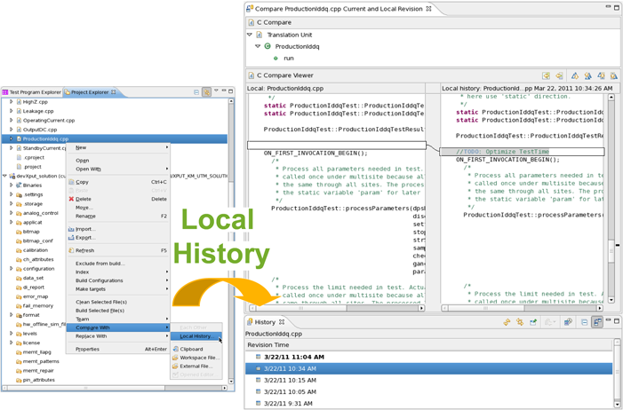
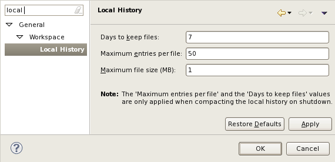

Little helper when working with test methods
While debugging test methods the SmarTest help system and the workspace related may help you efficiently:
Dynamic help
Where ever you are: Shift+F1 provides context sensitive help:

Local history
SmarTest keeps a local history of your changes stored in your workspace with following default configuration:
- Days to keep files: 7
- Maximum entries per file: 50
- Maximum feel size (MB): 1
To compare your code with a version from the history list on the Test Program Explorer right-click the code name and click .

Configure the local history on the Preferences window: On the menu click and type local.

Functional changes
- Introduced in SmarTest 7.1.3